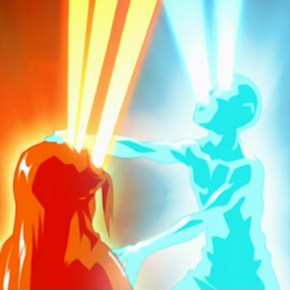

Geography of the World of Avatar

The World of Avatar, the Mortal World, or the Physical World is divided into multiple landmasses, islands, and seas with a unique physical geography, landmarks, climates, and demography. For most of its history, the world was divided into a multitude of states and cultures which coalesced into four independent nations: The Air Nomads , The Water Tribe , The Earth Kingdom , and The Fire Nation.
"The four nations were influenced by their corresponding element and accordingly shaped their environment."
The Air Nomads had four temples located in the north, south, east, and west of the Earth. There are two main Water Tribes, situated north and south of the Earth Kingdom, the most expansive and populated state in the world. The Earth Kingdom is by far the largest of the original Four Nations, and its geography varies widely from region to region. While there is often not a "hard-and-fast" division between these regions, certain areas are marked by geographic features that may not be common elsewhere. The Fire Nation is located in the west of the world and is an archipelago of volcanic islands. Each nation has a predominant season, and geography has a great influence on the customs and culture of each country
Air Bending
Air bending is the bending art used by the Air Nomads; The flying bison were the original airbenders.
It concentrates on speed and evasion, forgoing a strong offense for a greater defense. Though apparently lacking fatal finishing moves, it is the most dynamic of all the bending arts. As the element of freedom, airbenders use their capability to bend unencumbered by the ground or any other environmental factors and use their own momentum as a weapon, evading attacks with astounding agility to tire their opponents out or building up massive inertia for explosive gusts of wind to make their counterattacks finishing moves.
When resorting to physical confrontation, airbenders are able to harness the immense, intangible power of wind. Airbenders can use a flight technique by operating a glider glider and using the air to provide thrust and lift. Airbending's opposite is earthbending and the confrontational style that serves as its foundation. The sub-skills of airbending are flight and spiritual projection. Flight has only been achieved by two people in the entire history of airbending, namely Laghima and Zaheer . Airbending is the element of freedom, and its season is autumn.
Water Bending
Water Bending is practiced by some people of the Water Tribe. A versatile element, it is unique in the sense that the original bender of the element wasn't an animal, but rather the Moon . Waterbending is the element of change, and its season is winter.
Similar to their element, waterbenders are extremely adaptable and versatile. Waterbending concentrates on the flow of energy, focusing less on strength and more on turning the opponent's own energy against them. While a bender's victory in battle depends on their skill or ingenuity, waterbenders gain a serious advantage or disadvantage depending on the amount of water around them, although highly skilled waterbenders can draw water from anywhere, such as draw humidity from the air and bend the water in living things, especially plants.
As the element of change, waterbenders can fluidly and quickly alternate from defense to offense, from a wall of ice to a jet of water, turning their opponent's strength against them.Due to its lunar sympathy, waterbending is stronger at night and ineffective during a lunar eclipse or when the Moon Spirit dies. However, to counter waterbending's ineffectiveness during a lunar eclipse, waterbenders gain immense power during the peak of the full moon. The opposite of waterbending is firebending, with its relatively stagnant, direct philosophy. The sub-skills for waterbending are healing and bloodbending .
Earth Bending
Earth Bending originates in the Earth Kingdom and the first earthbenders were badgermoles .
It demands a special connection with the earth that is achievable with neutral jing, listening, though seemingly doing nothing and waiting for the right moment to strike. Like waterbenders, earthbenders gain an advantage or disadvantage in battle based on the amount of earth around them, though the conditions aren't as extreme. Because of their element's stability and its stress on neutral jing
"Listen to me, Aang. There are options in fighting, called jing. It's a choice of how you direct your energy ..." "I know! There's positive jing when you're attacking, and negative jing when you're retreating!" "... and neutral jing when you do nothing!" "There are three jings?" "Well, technically, there are eighty-five, but let's just focus on the third. Neutral jing is the key to earthbending. It involves listening and waiting for the right moment to strike." -Bumi to -Aang
Earthbenders stand their ground, absorbing or intercepting attacks until they completely overwhelm their opponents. Unlike the other bending arts, earthbending's strength equally lies in both offense and defense. Earthbending is in stark contrast to airbending as airbending's emphasis is on evasion and mobility while earthbending's emphasis is on fortitude and strength. The sub-skills for earthbending are Seismic sense , Metalbending , and Lavabending . Earthbending is the element of substance, and its season is spring.
Fire Bending
Fire Bending is used by the people of the Fire Nation and is the most aggressive bending art. Dragons were the first firebenders; they subsequently taught the Sun Warriors. For a long time, disciplines of firebending were taught to be fueled by hatred, as opposed to the original source.
As the element of power, firebenders have to be able to maintain a constant source of energy and balance in battle, unleashing a volley of direct, successive attacks. Unlike other benders who depend on external sources of their elements to bend, firebenders can create fire using their internal heat source in addition to controlling already existent flames. Skilled firebenders are able to fly using powerful jets of flames. Due to its solar affinity, firebending is stronger during the day and at its full power at noon, but completely ineffective during a Solar eclipse . When a comet passes close to the planet, the power of a firebender is greatly increased.
Firebending's relatively simple and direct style contrasts the changing style of waterbending. A notable feature of special firebenders is an ability to create a hotter, blue fire; Azula was the only known firebender who demonstrated this extra-powerful flame. The sub-skills for firebending are combustionbending , Generating and Redirecting
"If you let the energy in your own body flow, the lightning will follow it. You must create a pathway from your fingertips up your arm to the shoulder, then down into the stomach. The stomach is the source of energy in your body; it is called the sea of chi. From your stomach you direct it up again and out the other arm. The stomach detour is critical; you must not let the lightning pass through your heart, or the damage could be deadly. Iroh - teaching Zuko to redirect lightning.
Lightning. Firebending is the element of power, and its season is summer.
Energy Bending
Energy Bending is the art of bending the energy within one's body.
It existed in the Era of Raava and the four bending arts, though was considered lost. Few Avatars have learned this bending art, and even fewer have used it. It is a highly dangerous technique; if one's own energy is impure and therefore bendable, the practitioner will be consequently destroyed.
Energybending allows the user to remove other people's bending abilities; restore them after a bender had their abilities blocked by Bloodbending . and used the art to create a spiritual projection.
Specialized bending techniques
Specialized bending techniques are sub-skills that exist within each of the four bending arts, of which only skilled benders can take advantage. Each sub-skill requires a different level of mastery over the root element from which it is derived, as its practice often deviates from conventional bending. In some cases, the execution of a technique also requires an understanding of fundamental principles from other bending arts.

The creation of a specialized bending technique can sometimes be traced to a specific time period or even an individual bender. This is often the case when the technique has emerged relatively recently and is still contained to a select group of skilled benders. In other cases, the technique may have emerged in the distant past and has become more or less synonymous with conventional bending, even if its practice is still not widespread due to, for example, the high skill level required.
The Avatar
The Avatar, formed initially when Wan permanently fused with Raava during the Harmonic Convergence of 9,829 BG, is the human embodiment of light and peace through the connection with the Avatar Spirit. As the only physical being with the ability to bend all four elements, it is considered the Avatar's duty to master the four bending arts and use that power to keep balance among the four nations of the world, as well as between mankind and spirits.
Upon death, the Avatar Spirit causes the Avatar to reincarnate into the next nation, dictated by the cyclic order: fire, air, water, and earth. Mirroring the order in which the first Avatar, Wan, learned the elements, this is also the traditional order in which any one incarnation is to master the elements, beginning with the bending art of the Avatar's birth nation. The reincarnation cycle can only be broken if the Avatar is killed while in the Avatar State, Raava is removed from the Avatar and destroyed, or the Avatar Spirit is compromised by a spiritual infection .
"The Avatar State is a defense mechanism, designed to empower you with the skills and knowledge of all the past Avatars. The glow is the combination of all your past lives, focusing their energy through your body. In the Avatar State, you are at your most powerful, but you are also at your most vulnerable. If you are killed in the Avatar State, the reincarnation cycle will be broken and the Avatar will cease to exist." -Avatar Roku